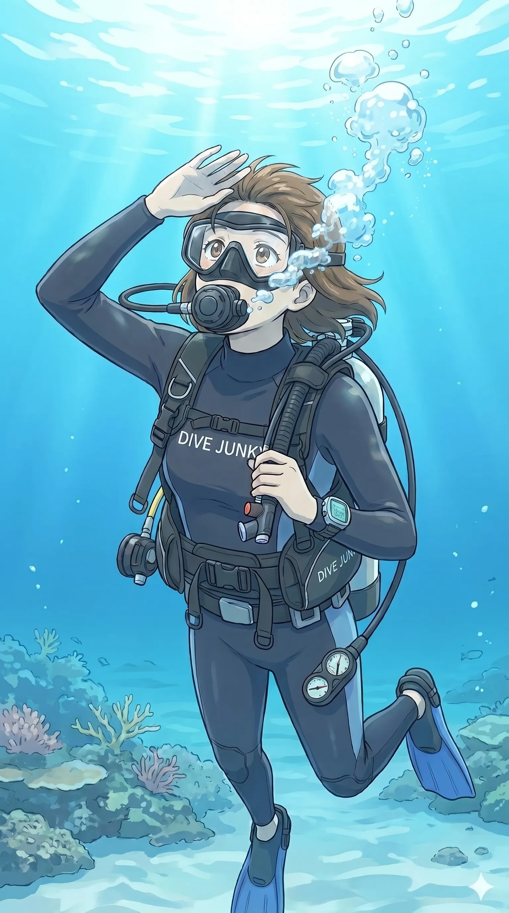

The road Orz passed by 2026 年 05 月
05 月 16 日 ( 土 )
Dive #159 今のダイバーは緊急スイミングアセントができないが、それは彼らが悪いわけでなないという話

AI は現時点で緊急スイミングアセント中のダイバーを描くことができない。それどころか AI は正しいダイビングスキルを一切描くことはできない。
なのでイラストのキャラクターが間違った緊急スイミングアセントを行っているのは許して欲しい。正しい方法はオープンウォーターのマニュアルを見返して復習して欲しい。
ダイバーなら誰でも知っている緊急スイミングアセントという緊急浮上法がある。ぼくが 1999 年 3 月 21 日に串本町住崎で水深 -15m 付近でエア切れを起こしたときに、ぼくは緊急スイミングアセントで水面まで戻った。
偉くもなんとも無い話で逆にエア切れを起こすなんて馬鹿かお前はって話ではある。でもあのときぼくが緊急スイミングアセントで水面に達するだけの能力がなかったら、住崎の水深 -15m で死体として転がっていたかも知れない。
緊急スイミングアセントは Open Water で学ぶスキルだ。ダイバーとして C カードを持っていれば全員学ぶ。だからダイバーとして認定されているなら誰でもできる、そう言いたいところだけれど実はそうは問屋が卸さない。
なぜかというと一般のファンダイバーは Open Water の講習の時しか、緊急スイミングアセントを練習する機会がないからだ。しかもせいぜい 5、6m の水深から 1、2 度練習するだけで、たとえ水面まで息が持たなくて途中で一息吸ってもダイバーとして認定される。
なんでそうなのかというと、本当に手順どおりの緊急スイミングアセントを求めると危ないからだ。
Open Water 受講生は、それまではダイビングの素人だ。ダイビングの素人をダイバーにするのが Open Water コースなので当然だ。
緊急スイミングアセントで息が持たないのを無理させると溺れ始める。また水面まで息を持たせようと息を吐く量を少なくしすぎると、肺の過膨張でとんでもないことになりかねない。
なので Open Water の段階では緊急スイミングアセントは完全でなくて良い、それよりもオクトパス・ブリージング・アセントで確実に安全に水面に戻れ、という考えが中心になっている。
そんなこともあって、水深 -15m から緊急スイミングアセントで水面に戻れるってすごいですね、なんて言われたりすることがある。
実はそれは違う。
ぼくは当時、現役のアシスタント・インストラクターであったし、ダイブマスター候補生でもあった。経験本数はたしかに 500 本は越えていたけれど、その半数は実は Open Water の講習である。
つまりぼくは 250 本以上の Open Water の講習を担当していた関係で、おそらく 500 回以上の緊急スイミングアセントを実演している。もちろんデモンストレーションレベルで。
これだけ見せることを前提とした緊急スイミングアセントをしていると、本当の緊急時に緊急スイミングアセントができてしまうようになる。
毎回毎回見せるための微調整を行いながらの緊急スイミングアセントを繰り返していると、緊急スイミングアセントは嫌でも誰でもできるようになる。
要は質を高めようとしながら回数を繰り返していたスキル、それが実際のエア切れのときに結果として現れた。ただそれだけに過ぎない。特別な何かは一切ない。
繰り返し練習させよ、ということは NAUI の全コース共通項目として基準に書かれている。ぼくの場合は講習を担当することで何百回も緊急スイミングアセントを繰り返すことで、スキルがブラッシュアップされたに過ぎない。
だから一般のファンダイバーの人たちは不利だと言える。安全が確保された環境で、何百回も練習する、そんな機会はほぼ与えられない。できないのが当たり前なのだ。
だからこそ「C カードを持っている」と「本当にできる」はまったく別の話になる。
非常時というのは、知識を思い出して対処する場ではない。身体に入っているものしか出てこない。
ぼくが水深 -15m から戻れたのは、特別な技能があったからではなく、単に何百回も繰り返してたことが再現されたに過ぎない。
だからこそ、技能を伝える側の人間は繰り返しを軽視してはいけないのだと思う。２、３日でダイバーになれますよ、とか言ってる場合ではない。
非常時に人を助けるのは、派手なテクニックではなく、身体に染み込むまで反復された基本技能なのだから。
- Category :
- #Records of Orz's Road
- #ダイバー
- #ダイビング
- #スクーバダイビング
- #エア切れ
- #緊急浮上法
- #緊急スイミングアセント
- #CESA